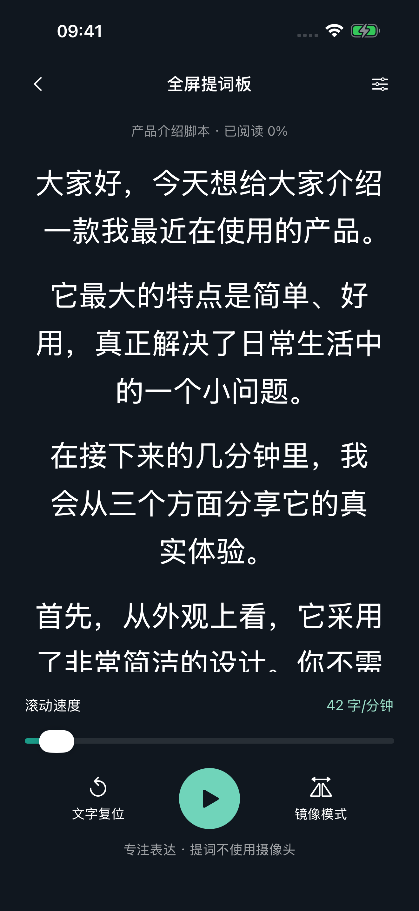
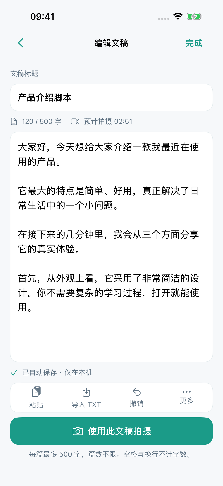
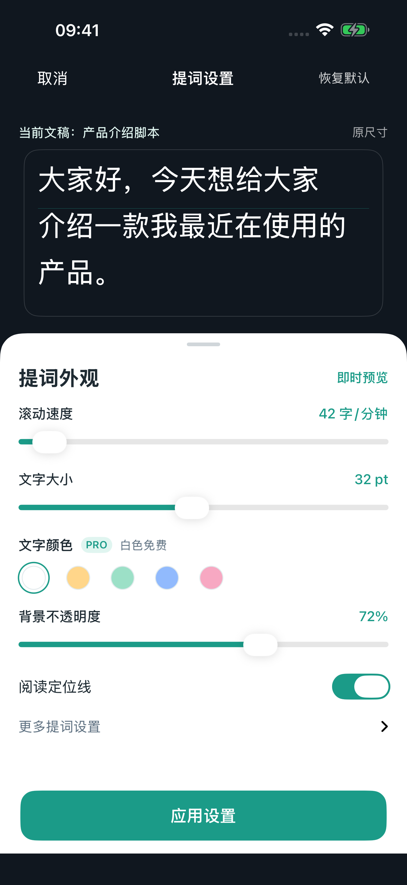

把想法变成文稿
输入、粘贴或导入 TXT。文稿在本机保存，未完成编辑也有草稿保护，方便下次接着写。

先整理内容，再找到舒服的阅读速度。练习不需要打开相机，准备好后再开始拍摄。
输入、粘贴或导入 TXT。文稿在本机保存，未完成编辑也有草稿保护，方便下次接着写。
调整字号、滚动速度与提词区域，在全屏提词板中练习；需要搭配镜面设备时可使用镜像模式。
提词界面不会写进视频。原片保存在作品库，可主动保存到照片或通过系统分享，免费版也无水印。
管理要说的内容，调整阅读的节奏。准备工作更有条理，开口时就多一分从容。


Pro 为一次性买断，不自动续费。实际价格以 App 内的 App Store 展示为准。
| 功能 | 免费版 | Pro |
|---|---|---|
| 每条录制时长 | 最长 3 分钟 | 无应用时长上限 |
| 每篇正文 | 最多 500 字 | 无应用字数上限 |
| 文稿 / 拍摄次数 | 不限 | 不限 |
| 导出水印 | 无水印 | 无水印 |
| 字号、速度、镜像 | 支持 | 支持 |
| 文字颜色、专业预设 | — | 支持 |
| 4K 与高级拍摄控制 | — | 设备支持时可用 |
500 字仅计算正文，空格与换行不计入；标点、字母、数字计入。设备规格、可用存储及温控仍可能限制拍摄。购买及恢复购买均通过 Apple 验证。
查阅使用指南、草稿恢复与购买说明，或向开发者反馈问题。